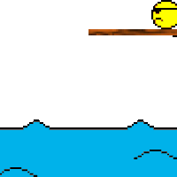

Read this. it is much cleaner than this one ever was.
5 Likes
Feel free to host any SFoL of this gamemode. I allow anyone to host. Don’t even ask for permission to host it. Just host it. Feel free to ask questions about the classes if you don’t entirely understand it. Possessor needs a new plunder ability but other than that it should be okay.
5 Likes
This game mode is brilliant! I need it.
If there was anything i’d change. It’d be the factions.
I’d make the good guys a Navy faction and replace Cult/Unseen with Pirates/Undead.
I love this idea overall I have no objections.
I mainly wanted to keep the Unseen and Cult here as I like the whole idea of Unseen and Cult. I just mainly wanted a gamemode with a new Blue Dragon that we aren’t used to.
I might create your suggestion for the fun of it. But for now at least, we have good pirates that are friends with the Blue Dragon.
Not all pirates are evil, at least these ones aren’t.
1 Like
I love this suggestion, and there’s so much you can do with it! 
For executions, the Captain always fulfills the walking of the plank, you could make it be a shark at the end, who eats the person whole, could be a whirlpool that sucks them into the deep ocean, could be even a whale XD, but yeah you get the point:

And for trials, you could have all the crewmates lined up in front of the captain on the Deck.
Also, for jails you could call it the Brig, like this:
http://pirates.wikia.com/wiki/Brig_(prison)
There’s just so much you can do with this
2 Likes
Thanks for the ideas. I’m probably gonna stick with no jails because The First Mate needs the deck scrubbed nice and clean. It also makes him not an exact prince clone having something interesting about him.
1 Like
I’d love some opinions on the new neutrals
1 Like